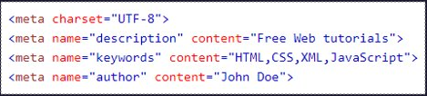
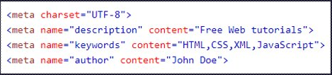

METADADOS
Metadados são dados externos à página que são usados pelos navegadores (como exibir conteúdo), pelos mecanismos de pesquisa (palavras-chave) e outros serviços da web

Metadados são dados externos à página que são usados pelos navegadores (como exibir conteúdo), pelos mecanismos de pesquisa (palavras-chave) e outros serviços da web
